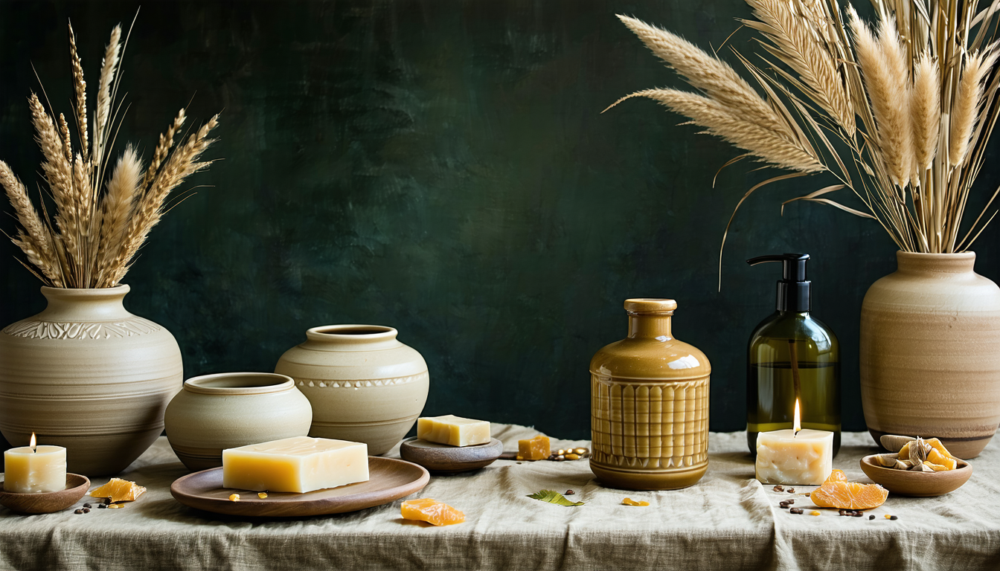
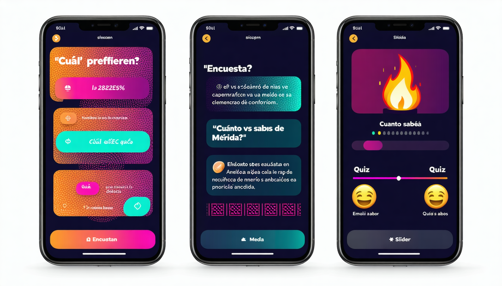
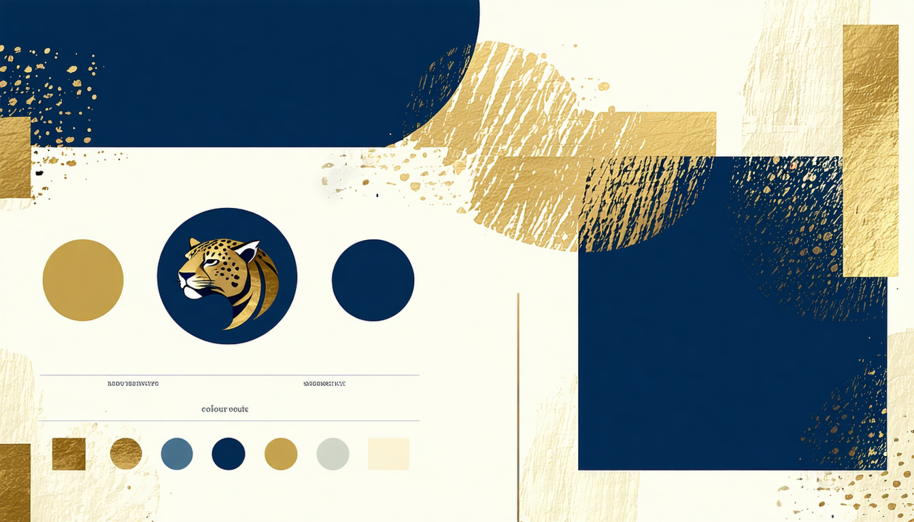

Objetivo: Analizar los elementos de identidad de marca y evaluar la coherencia entre tono, personalidad y estrategias de dinamización comunitaria.
Nivel Bloom: Analizar / Evaluar
Porque su voz es inconfundible. La voz de marca es quién ERES. El tono es cómo te SIENTES hoy.
| Adjetivo | Significa ✅ | NO significa ❌ |
|---|---|---|
| Cercana | Hablamos como amigos, usamos "tú" | No somos cursis ni invasivos |
| Experta | Compartimos conocimiento con seguridad | No somos pretenciosos |
| Local | Celebramos Mérida, usamos regionalismos | No excluimos a visitantes |
💭 Si tu marca fuera una persona en una fiesta, ¿cómo hablaría? ¿Sería la chistosa? ¿La que sabe de todo? ¿La confiable?
💭 Escribe el anuncio de un NUEVO PRODUCTO de tu marca en 4 tonos diferentes. ¿Cuál se siente más natural?
Explorador
GoPro, Jeep
Héroe
Nike, FedEx
Rebelde
Harley, Duolingo
Mago
Apple, Disney
Bufón
Oxxo, M&Ms
Tipo Normal
IKEA, Target
Amante
Chanel, Godiva
Cuidador
Volvo, UNICEF
Creador
Lego, Adobe
Gobernante
Rolex, Mercedes
Sabio
Google, TED
Inocente
Dove, Coca-Cola
💭 ¿Qué arquetipo le darías a tu marca? ¿Y cuál usa tu competidor principal? Deben ser DIFERENTES.
Ejemplo: panadería artesanal — terracota + crema + oliva
Títulos: con personalidad | Cuerpo: legible | Acentos: decorativa
¿Luz cálida o fría? ¿Overhead o 45°? ¿Con personas o solo producto?
Alterna: foto + gráfico + video cover = reconocimiento

Voz: Atrevida, irreverente, obsesiva
Ejemplo: "practica o el búho sabe dónde vives 🦉"
Lección: No tengas miedo de tener opinión
Voz: Autoirónica, pop-culture, mexicanísima
Ejemplo: [responde memes sobre sí mismo]
Lección: Abraza cómo te percibe la gente
Voz: Clara, amigable, nerd-cómica
Ejemplo: "High fives! Your campaign is on its way."
Lección: Claridad + personalidad = confianza
La prueba del intercambio: Quita el logo de 5 publicaciones. ¿Puedes identificar la marca solo por cómo suena? Si sí → voz consistente. Si no → problema de coherencia.
Los turistas publican Stories probando chocolate en su tienda del centro. Es UGC natural. Un CM inteligente:
💭 ¿Cómo incentivarias que los clientes de TU marca generen contenido espontáneo?
• Encuestas en Stories
• "Esto o aquello"
• Box de preguntas
• Quizzes
• Slider de emoji
KPI: Engagement rate en Stories > 5%
• TikTok challenge con hashtag
• Concurso de fotos
• "Comparte tu experiencia"
• Duets / Stitches
• User takeover
KPI: Contenido generado > 20 piezas
• Programa de embajadores
• Reconocimiento a seguidores
• Serie recurrente semanal
• Acceso anticipado a productos
• Live exclusivos para comunidad
KPI: Retención + repeat engagement

| Pregunta | ✅ Coherente | ❌ Incoherente |
|---|---|---|
| ¿Los últimos 9 posts comparten paleta? | Dominan los mismos 2-3 colores | Cada post es un color diferente |
| ¿El tono de copies es consistente? | Siempre cercano/con humor | A veces formal, a veces memes |
| ¿La bio refleja la personalidad? | Con tono de marca y propuesta clara | Genérica: "Restaurante en Mérida 📍" |
| ¿Las Stories mantienen estética? | Templates con colores de marca | Fondos random, stickers de colores |
| ¿El feed se siente como "una persona"? | Personalidad clara y reconocible | Parece que 5 personas publican |
💭 Evalúa la marca que elegiste. ¿Cuántos ✅ y cuántos ❌ tiene? Ese diagnóstico va en tu Brand Book.
Pro tip: Crea 5 templates base para tu marca y úsalos siempre. La consistencia crea reconocimiento.
